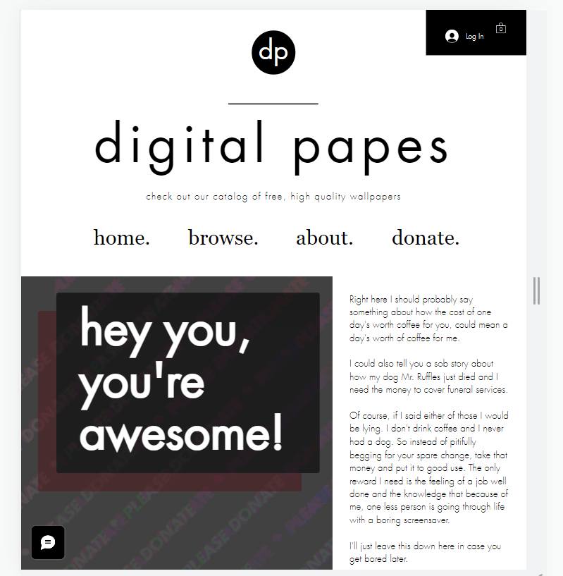
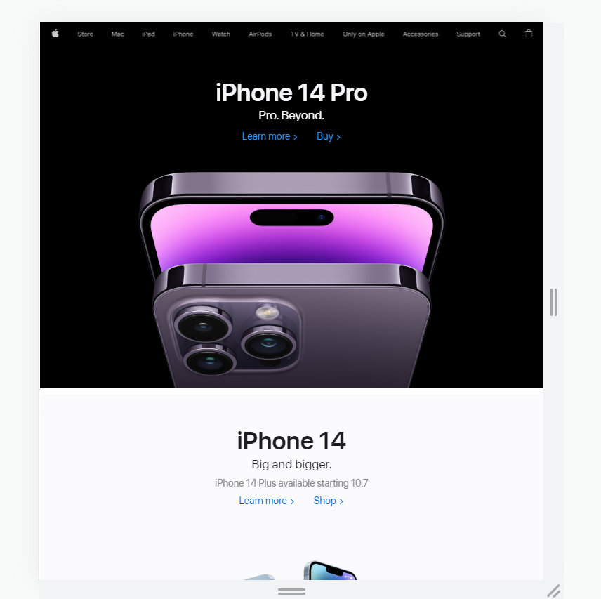
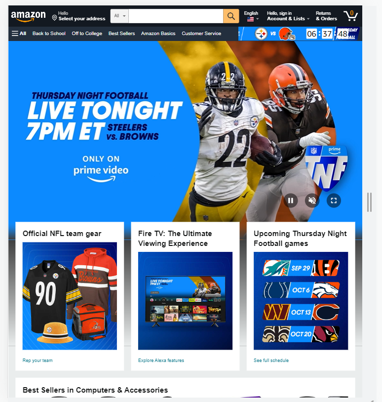

Visual Hierarchy
digital papes
https://www.digitalpapes.com/donate The use of Visual Hierarchy is the idea of placing items on a webpage so a user's attention can be drawn to the most important elements first. I like the way the digital papes website used the name of it's website as the main focus for the page. The font was large and at the top of the page so a user's focus was immediately drawn to it. A user unfamiliar with the website wouldn't find a lot of meaning in the name, but immediately in a contrasting size text was a simple description of the website. The contrast between the two elements, I feel like, worked as one element giving information immediately. The next item on the page was a large picture which the user's attention was drawn to after the website name. I liked the way visual hierachy was used along with the dispersion of enough informaiton so the user knew exactly what the website was about.
Hick's Law
Apple
https://www.apple.com/ Hick's Law is the idea that there is a "relationship between the number of stimuli present and an individual's reaction time." The "K.I.S.S" acronym represents the idea of Hick's Law pefectly, keep it short and simple. I feel like Apple does an excellent job avoiding complexity on webpages. They avoid flooding with options by displaying the most important element on each page and the menus are simple. Each menu leads to other menus that are also simple sometimes using pictures for the menu options.
Fitt's Law
Amazon
https://www.amazon.com/ Fitt's Law is the principle that "the amount of time it takes for a person to move a pointer to a target is a funciton of the distance to the target divided by the size of the target." It sounds complex right? I feel like the idea is about creating icons that are well sized so a user doesn't have to work hard to click on specific items in menus or other content. Also, the distance between items that might be related to what a user is likely to choose are kept at a short distance from each other to make it more likely the user will click on them. Amazon, I feel like, has this mastered. It is very easy to navigate the website. When I want to purchase items I flow through the different clicking actions with ease. When searching for specific items there are recommended, or similar, items within a relatively short clicking distance.